Hermes1D¶
About Hermes1D¶
Hermes1D is an experimental C++ library for the solution of ordinary differential equations (ODE) and one-dimensional partial differential equations (PDE) with higher-order finite element methods (hp-FEM). In contrast to traditional time-stepping ODE solvers, Hermes1D constructs the solution using a variational principle. It starts from a weak formulation of the ODE/PDE problem and allows the equations to be defined in a very general implicit (vector-valued) form F(y, y’, t) = 0. The approximation is a continuous, piecewise-polynomial function defined in the entire interval (0, T). In contrast to time-stepping schemes, the finite element approach makes it possible to prescribe boundary conditions either at the beginning or at the end of the time interval (combinations are possible for systems). The hp-FEM discretization leads to a system of nonlinear algebraic equations that is solved via the Newton’s method or JFNK. Hermes1D comes with a free interactive online lab powered by UNR HPC cluster. The library is distributed under the BSD license.
About this Document¶
Prior to reading this document, we recommend that you install Hermes using instructions on its home page, and subscribe to the mailing list. Our mailing list is a very active place where you should get all answers quickly.
The best way of reading this tutorial is to run the code at the same time. After making your way through the tutorial, you may want to browse the directory with examples that contain a variety of different ODE and one-dimensional PDE models. If you create an interesting model using Hermes, let us know and we will add it to the repository.
The source code can be viewed in the git repository. For the 2D and 3D codes, see the Hermes2D and Hermes3D home pages, respectively.
User and Developer Documentation¶
User documentation can be found in the directory ‘doc/’. Type ‘make html’ there to build it. The documentation is available online at http://hpfem.org/hermes/doc/hermes1d/index.html.
To compile the C++ reference manual, go to ‘hermes1d/doc.cpp/’. There type ‘doxygen hermes1d.lib-real.doxyfile’. The html files are in ‘h1d-real/html/index.html’. This documentation is also available online at http://hpfem.org/hermes/hermes1d/doc.cpp/h1d-real/html/index.html.
Mathematical Background¶
When one speaks about the numerical solution of ODEs, one usually has in mind initial value problems for equations of the form
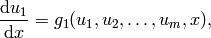
(1)
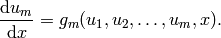
These are solved in a finite time interval 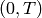 using various time-stepping methods. There are tons of those and some are quite sophisticated (meaning multistep, higher-order, adaptive, etc.). But all of them have the following common shortcomings:
- We would like to prescribe the initial value at
 for some solution components and the end-time values at 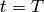 for others. Standard time stepping methods do not allow this.
for some solution components and the end-time values at 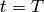 for others. Standard time stepping methods do not allow this. - Global error control is problematic. One only can regulate the time step size locally – this is something like “forward mesh refinement’‘. But one cannot do “backward mesh refinement’’ or coarsening easily.
- We would like to prescribe a tolerance for the global error and then have the problem solved adaptively until this error tolerance is reached, without underresolving or overresolving too much. This is virtually impossible with adaptive time stepping methods.
- Standard time integration methods cannot change their order during the computation. For example, an adaptive RK4 method remains 4-order all the time. This is an analogy for
 -refinement in FEM, and obviously it is highly inefficient. Correctly, the method should either do small low-order steps or large high-order steps to be efficient. We would like to see such an analogy of 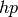-refinement in ODE methods.
-refinement in FEM, and obviously it is highly inefficient. Correctly, the method should either do small low-order steps or large high-order steps to be efficient. We would like to see such an analogy of 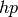-refinement in ODE methods. - We would like to solve more general ODEs than (1).
This is why we decided to apply the -FEM methodology to ODEs and see what happens.
Equations¶
We implemented the first version of Hermes1D during one day while returning from the 2009 SIAM CSE conference. First we considered the form (1) but then we realized that with no extra work we can actually assume a much more general implicit form
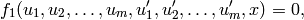
(2)
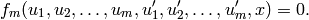
Note that (2) contains (1) as a special case. In fact, (2) can be written shortly as
(3)
where 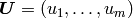 and 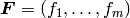.
Boundary conditions¶
So far, we have considered Dirichlet boundary conditions only, which can be
imposed either at the initial time or the end-time . Exactly one
condition per solution component has to be defined.
hp-FEM discretization¶
As always, the finite element discretization starts from a weak formulation. With (2), the situation is easy and we have
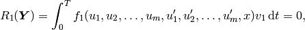
(4)
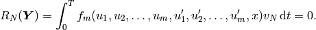
Here 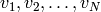 are all basis functions for all solution
components (we can describe this more accurately if needed). In the standard
sense, all basis functions corresponding to the solution component  are
zero where has a Dirichlet boundary condition. The vector 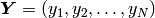 comprises all unknown coefficients of the finite element
basis functions for all solution components. The meshes for the solution
components 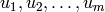 could (more precisely: should) be
different but for now we assume that they are the same.
are
zero where has a Dirichlet boundary condition. The vector 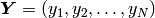 comprises all unknown coefficients of the finite element
basis functions for all solution components. The meshes for the solution
components 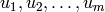 could (more precisely: should) be
different but for now we assume that they are the same.
Newton’s method¶
We will drive the residual vector 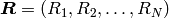 to zero using the Newton’s method. For that, we need the Jacobi matrix 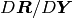.
Let 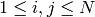. It is easy to calculate that
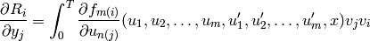
(5)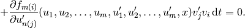
Here, the function 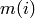 takes a global index 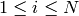 and returns the index of the function 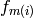 which is associated with 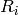. Analogously, 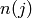 takes a global index 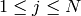 and returns the index of the solution component 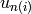 where the basis function 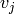 belongs to.
The integral in (5) has two parts because the functions 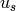 and 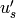 depend on the same solution coefficients. Do not be confused by the derivatives with respect to 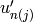 in (5). The functions and are used as independent variables for the differentiation.
Interactive Web Accessibility¶
- Interactive web usage. You can use Hermes (and other major open source FEM codes) remotely via any web browser, using the FEMhub Online Numerical Methods Laboratory. Your hardware will not be used as the online lab is powered by the University of Nevada, Reno (UNR) high-performance computing facility (Research Grid). You can compute with Hermes using an iPhone if you like.

See the Hermes home page for more information. An overview of books, journal articles, conference proceedings papers and talks about Hermes and adaptive hp-FEM can be found in its publications section.